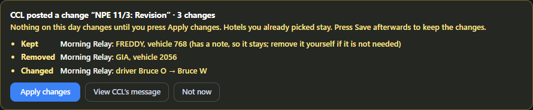
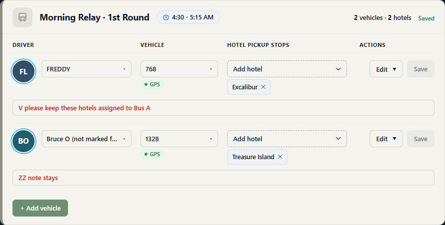
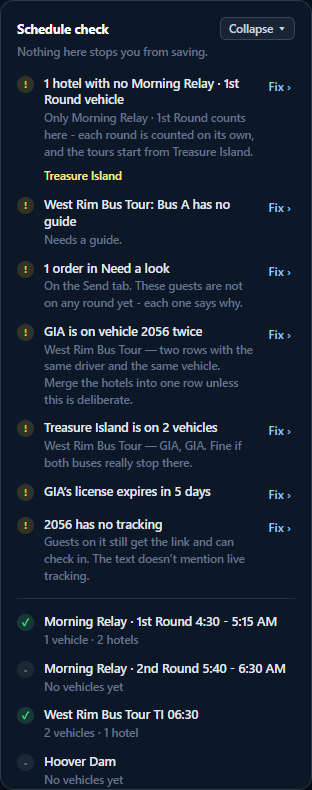
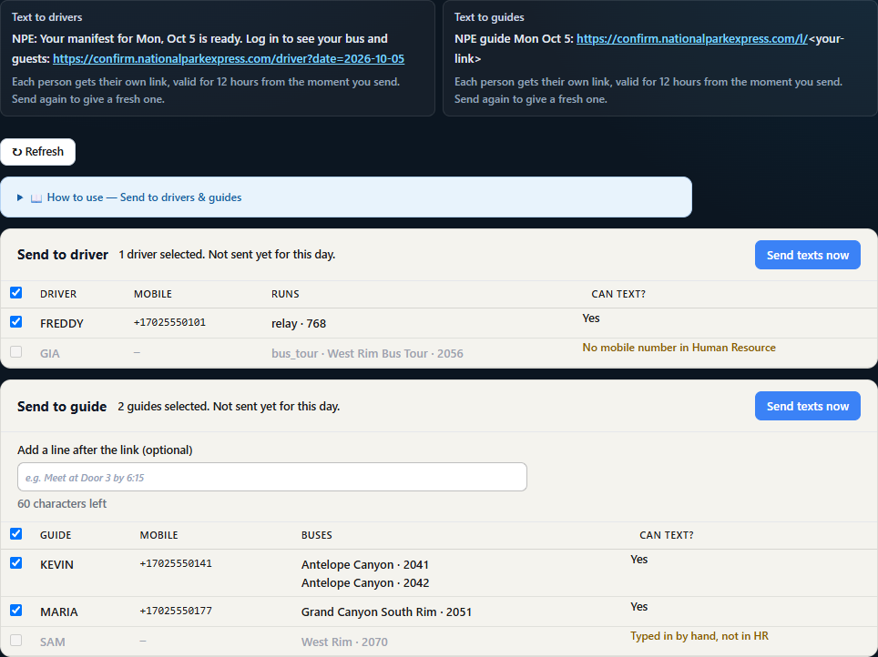

<title>CCL Removed Cars</title>
<meta name="claude:viewport-fit-sides" content="cover">
<style>
/* 布局：竖排阅读页；每块左「现在（ops 真截图）」右「改后（样稿）」，窄屏上下叠。样稿照 Dispatch 白卡片。 */
:root{
  --bg:#eef0f2; --paper:#fbfbfa; --ink:#1a1a1a; --mute:#5b6270; --line:#d6dae0; --accent:#2f5d8a;
  --q:#fff6d6; --qline:#e6cf7a;
  --f-body:"Inter","Segoe UI","Microsoft YaHei",system-ui,sans-serif; --f-head:"Space Grotesk","Inter","Microsoft YaHei",sans-serif;
}
@media (prefers-color-scheme:dark){:root:not([data-theme="light"]){--bg:#12161b;--paper:#1b2027;--ink:#e7e9ec;--mute:#a2aab4;--line:#323a44;--accent:#8db8e3;--q:#2d2814;--qline:#6b5a22;color-scheme:dark}}
:root[data-theme="dark"]{--bg:#12161b;--paper:#1b2027;--ink:#e7e9ec;--mute:#a2aab4;--line:#323a44;--accent:#8db8e3;--q:#2d2814;--qline:#6b5a22;color-scheme:dark}
body{background:var(--bg);color:var(--ink);font-family:var(--f-body);line-height:1.65;padding-block:28px 60px;padding-left:max(16px,env(safe-area-inset-left,0px));padding-right:max(16px,env(safe-area-inset-right,0px))}
main{max-width:1180px;margin:0 auto;display:grid;gap:34px}
h1,h2,h3{font-family:var(--f-head);text-wrap:balance;margin:0}
h1{font-size:1.75rem} h2{font-size:1.25rem;border-bottom:1px solid var(--line);padding-bottom:6px} h3{font-size:1rem}
p{margin:0} .mute{color:var(--mute)}
code{font-size:.86em;background:var(--paper);border:1px solid var(--line);border-radius:4px;padding:0 4px;overflow-wrap:anywhere}
section{display:grid;gap:14px}
.pair{display:grid;grid-template-columns:minmax(0,1fr) minmax(0,1fr);gap:16px}
@media (max-width:900px){.pair{grid-template-columns:minmax(0,1fr)}}
.col{display:grid;gap:8px;align-content:start;min-width:0}
.tag{font-size:.72rem;letter-spacing:.08em;text-transform:uppercase;font-weight:700;color:var(--mute)}
.tag.new{color:var(--accent)}
.shot{border:1px solid var(--line);border-radius:8px;overflow:auto;background:#fff}
.shot img{display:block;max-width:none;width:100%}
ul.facts{margin:0;padding-left:1.2em;display:grid;gap:4px;font-size:.92rem}
.q{background:var(--q);border:1px solid var(--qline);border-radius:10px;padding:14px 16px;display:grid;gap:8px}
.q ol{margin:0;padding-left:1.3em;display:grid;gap:4px}
.rec{font-weight:700}
.flowwrap{overflow-x:auto}
table.flow{border-collapse:collapse;width:100%;font-size:.88rem}
table.flow th,table.flow td{border:1px solid var(--line);padding:6px 8px;text-align:left;vertical-align:top}
table.flow th{background:var(--paper)}
/* —— 样稿（照 ops Dispatch 白卡片；红色只用已有的：#fdeceb 底 / #b3261e 字，legacy-styles.ts:44、vehicle-row.tsx:599） —— */
.mock{background:#f3f1ec;color:#1a1a1a;border:1px solid var(--line);border-radius:10px;padding:12px;font-size:13px;overflow-x:auto;display:grid;gap:12px}
.dark{background:#1f2328;border-radius:12px;padding:12px}
.card{display:grid;grid-template-columns:92px minmax(0,1fr);border:1px solid #dfe3e8;border-radius:10px;background:#fbfbfa;min-width:560px}
.card .left{border-right:1px solid #dfe3e8;padding:10px 6px;text-align:center;display:grid;gap:2px;align-content:start}
.card .left small{font-size:11px;font-weight:700;letter-spacing:.06em}
.card .left b{font-size:28px;line-height:1}
.card .body{padding:10px 12px;display:grid;gap:8px}
.sel{display:inline-block;border:1px solid #cbd2dc;border-radius:7px;background:#fff;padding:4px 10px;min-width:110px}
.selrow{display:flex;gap:8px;flex-wrap:wrap}
.chip{display:inline-block;border:1px solid #cbd2dc;border-radius:7px;background:#eef2f6;padding:2px 8px;font-size:12px}
.pill{display:inline-block;border-radius:999px;padding:1px 9px;font-size:11.5px;font-weight:600}
.pill.ok{background:#e6f4ec;color:#1e6b43}
.btnx{border:1px solid #cbd2dc;border-radius:7px;background:#fff;padding:2px 10px;font-size:12px}
.card.red{background:#fdeceb;box-shadow:0 0 0 2px #b3261e}
.card.red .left{border-right-color:rgba(179,38,30,.25)}
.strip{grid-column:1/-1;display:flex;gap:10px;align-items:center;flex-wrap:wrap;border-bottom:1px solid rgba(179,38,30,.25);background:#fdeceb;color:#b3261e;font-weight:650;font-size:12.5px;padding:6px 12px;border-radius:10px 10px 0 0}
.strip .rm{border:1px solid rgba(179,38,30,.35);border-radius:7px;background:#fff;color:#b3261e;padding:1px 10px;font-weight:500}
.rrow{display:grid;grid-template-columns:minmax(0,1.3fr) minmax(0,.85fr) minmax(0,1.35fr) 110px;gap:14px;align-items:start;padding:10px 12px;border-bottom:1px solid #e5e7eb;min-width:620px;background:#fbfbfa}
.rrow.red{background:#fdeceb;box-shadow:inset 3px 0 0 #b3261e}
.rrow .why{grid-column:1/-1;color:#b3261e;font-weight:650;font-size:12.5px;display:flex;gap:10px;align-items:center}
.rrow .why .rm{border:1px solid rgba(179,38,30,.35);border-radius:7px;background:#fff;color:#b3261e;padding:1px 10px;font-weight:500}
.av{display:inline-grid;place-items:center;width:34px;height:34px;border-radius:50%;background:#2f4a66;color:#fff;font-weight:700;font-size:12px;margin-right:6px}
.relaybox{border:1px solid #dfe3e8;border-radius:12px;background:#fbfbfa;overflow-x:auto}
.relayhead{padding:10px 12px;font-weight:700;border-bottom:1px solid #e5e7eb}
.bar{border:1px solid rgba(251,191,36,.38);background:rgba(251,191,36,.10);color:#fde68a;border-radius:12px;padding:12px 14px;font-size:13px}
.bar b.t{color:#fff;display:block}
.bar ul{margin:.4em 0 0;padding-left:18px}
.bar .lab{display:inline-block;min-width:62px;font-weight:700}
.bar .w{color:#fff}
.bar .btns{margin-top:8px;display:flex;gap:8px;flex-wrap:wrap}
.bar .b1{background:#3b82f6;color:#fff;border-radius:8px;padding:4px 12px}
.bar .b2{border:1px solid rgba(255,255,255,.3);color:#fff;border-radius:8px;padding:4px 12px}
</style>

<main>
<header style="display:grid;gap:8px">
  <p class="tag">Dispatch · CCL fill-and-replace · preview v3 · 给 Annie · 2026-11-27 · e2</p>
  <h1>CCL 去掉的车：不删，整张卡标红</h1>
  <p>你的原话：「CCL的discord进来不要把整张bus card和relay card 冲掉，只做填充和替换可以么」「对，CCL去掉的车不要自动删」「对，CCL去掉的车整张卡标红」。左边是 ops 现在的样子（ops 真页面截图，模拟数据），右边是改后样稿。v2 照你 R1 的回答加了 Schedule check 那一条和 Send 的挡法，R2 拿掉。①–⑥ 你已说「动手」，在写代码。v3 新加 ⑦ 座位不够（你说「换的车座位少就要标出来少了几个，建议是什么」），只是样稿，等你定 QS1、说「动手」。</p>
</header>

<section>
  <h2>先说现在：哪些已经是「只填充、替换」</h2>
  <ul class="facts">
    <li><b>CCL 改了某台车</b>（Changed）：现在只换 CCL 说了的几样——司机、导游、车号、Bus 字母；酒店、站点、备注、座位都不动（components/dispatch/dispatch-view.tsx:1808-1826 <code>applyRevision</code>）。<b>已经符合「只填充、替换」，不改。</b></li>
    <li><b>CCL 加了车</b>（Added）：在那一块下面加一张新卡（dispatch-view.tsx:1804-1806）。不改。</li>
    <li><b>CCL 去掉了某台车</b>（Removed）：现在按 Apply changes 就把整张卡删掉（dispatch-view.tsx:1798-1801、1830）；只有写了备注的车例外，留着、横幅写 Kept（G300，ccl-banner.tsx:81-90）。<b>这是要改的地方。</b></li>
    <li>第一次（这一天还没存过）CCL 填进来的蓝条不会删东西，不受影响（ccl-banner.tsx:45-53）。</li>
  </ul>
</section>

<section>
  <h2>① 横幅（黄条）：Removed 那一行的写法</h2>
  <ul class="facts">
    <li>现在：没备注的写 “Removed  Morning Relay: GIA, vehicle 2056”，有备注的写 “Kept … (has a note, so it stays; remove it yourself if it is not needed)”（ccl-banner.tsx:81-90）。</li>
    <li>改后：所有去掉的车都留着，不再分 Kept / Removed 两种；一律写 Removed，后面写清楚「留在页面上、标红」。说明那句也加半句。</li>
  </ul>
  <div class="pair">
    <div class="col"><p class="tag">现在（ops 截图）</p><div class="shot" style="background:#1f2328"></div></div>
    <div class="col"><p class="tag new">改后（样稿）</p>
      <div class="dark"><div class="bar">
        <b class="t">CCL posted a change “NPE 11/3: Revision” · 3 changes</b>
        Nothing on this day changes until you press Apply changes. Hotels you already picked stay. Vehicles CCL removed stay on the page in red; remove them yourself if they are not needed. Press Save afterwards to keep the changes.
        <ul>
          <li><span class="lab">Removed</span> <span class="w">Morning Relay</span>: FREDDY, vehicle 768 (stays in red; remove it yourself if it is not needed)</li>
          <li><span class="lab">Removed</span> <span class="w">Morning Relay</span>: GIA, vehicle 2056 (stays in red; remove it yourself if it is not needed)</li>
          <li><span class="lab">Changed</span> <span class="w">Morning Relay</span>: driver Bruce O → Bruce W</li>
        </ul>
        <div class="btns"><span class="b1">Apply changes</span><span class="b2">View CCL’s message</span><span class="b2">Not now</span></div>
      </div></div>
    </div>
  </div>
</section>

<section>
  <h2>② Bus card：CCL 去掉的车整张卡标红</h2>
  <ul class="facts">
    <li>现在：Bus card 是 vehicle-row.tsx:1220 <code>VanBlock</code>；卡片已经有一种「整张卡染色 + 顶上一条 + Remove」的样子——座位多出来时的黄色「Not needed for N guests」（vehicle-row.tsx:1266-1284）。</li>
    <li>改后：照同一个结构，换成现有的红：卡片底 #fdeceb、外圈 2px #b3261e、顶上一条红字「CCL removed this car」+ Remove 键（颜色出自 legacy-styles.ts:43-44 <code>ERRBAR</code> 和 vehicle-row.tsx:599 红色 Pill，不加新颜色）。司机、车、酒店、备注照旧能改。</li>
    <li>两种都碰上（CCL 去掉了、座位也多余）：红的在上，黄条不出（一张卡只出一条，红的更要紧）。</li>
  </ul>
  <div class="pair">
    <div class="col"><p class="tag">现在（ops 截图）</p><div class="shot"></div></div>
    <div class="col"><p class="tag new">改后（样稿）</p>
      <div class="mock">
        <div class="card red">
          <div class="strip">CCL removed this car <span class="rm">Remove</span></div>
          <div class="left"><small>BUS</small><b>A</b><small>#2056</small></div>
          <div class="body">
            <div><b>GIA</b> drives and guides · 1 hotel <span class="pill ok">Ready</span></div>
            <div class="selrow"><span class="sel">GIA</span><span class="sel">Driver Guide</span><span class="sel">2056</span><span class="sel">Bus A</span></div>
            <div><span class="chip">1 Treasure Island ×</span></div>
          </div>
        </div>
      </div>
    </div>
  </div>
</section>

<section>
  <h2>③ Relay card（Morning Relay）：那一行标红</h2>
  <ul class="facts">
    <li>现在：Morning Relay 一块里每台车是一行（vehicle-row.tsx:1004 <code>RelayRow</code>，1031 的格子），没有单独的卡框。</li>
    <li>改后：那一行整行 #fdeceb、左边 3px #b3261e 竖线，行顶一行红字「CCL removed this car」+ Remove（同 Bus card 的红）。</li>
  </ul>
  <div class="pair">
    <div class="col"><p class="tag">现在（ops 截图）</p><div class="shot"></div></div>
    <div class="col"><p class="tag new">改后（样稿）</p>
      <div class="mock"><div class="relaybox">
        <div class="relayhead">Morning Relay · 1st Round</div>
        <div class="rrow red">
          <div class="why">CCL removed this car <span class="rm">Remove</span></div>
          <div><span class="av">GI</span><span class="sel">GIA</span></div><div><span class="sel">2056</span></div><div><span class="chip">Excalibur ×</span></div><div><span class="btnx">Edit ▾</span></div>
        </div>
        <div class="rrow">
          <div><span class="av">BO</span><span class="sel">Bruce W</span></div><div><span class="sel">1328</span></div><div><span class="chip">Treasure Island ×</span></div><div><span class="btnx">Edit ▾</span></div>
        </div>
      </div></div>
    </div>
  </div>
</section>

<section>
  <h2>④ Schedule check（Dispatch 右边的检查清单）：加一条「CCL removed …」</h2>
  <ul class="facts">
    <li>现在：Dispatch 的 check list 就是右边的 <b>Schedule check</b> 浮窗（components/dispatch/rail.tsx:38-60 说明，清单 :130-200）。每条一个黄色「!」、标题、一行说明、「Fix ›」带你到那台车（框闪黄 2 秒）。清单项由 components/dispatch/config.ts:374 <code>analyze()</code> 算，例如缺导游那条（:529-536）写 “West Rim Bus Tour: Bus A has no guide / Needs a guide.”。顶上写 “Nothing here stops you from saving.”（rail.tsx:126）。</li>
    <li>改后：每台红卡在清单最上面一条，标题红字（Dispatch 深底红字 #fca5a5，legacy-styles.ts:46 <code>DARK_ERR</code>）。说明照你「提示staff把车删掉或改其它车」写：<br><b>“CCL removed Bus B (West Rim)” / “CCL no longer sends this vehicle. Remove it or change it to another vehicle.”</b><br>Morning Relay 的写 “CCL removed vehicle 2056 (Morning Relay)”。Fix › 带到那张红卡。</li>
    <li>G368「没填完不能发」前端还没做（ops 里搜 DISPATCH_INCOMPLETE 没有），后端 75 是草稿。下面 Send 那一块的红框是新做的；G368 上线时两种共用一个框。</li>
  </ul>
  <div class="pair">
    <div class="col"><p class="tag">现在（ops 截图）</p><div class="shot" style="background:#0c1828;max-width:340px"></div></div>
    <div class="col"><p class="tag new">改后（样稿，最上面一条）</p>
      <div class="dark" style="background:#0c1828;max-width:320px;color:#e2e8f0;font-size:12.5px;display:grid;gap:10px">
        <div style="display:flex;justify-content:space-between"><b style="color:#fff">Schedule check</b><span style="border:1px solid rgba(255,255,255,.15);border-radius:6px;padding:0 8px;font-size:11.5px;color:#cbd5e1">Collapse ▾</span></div>
        <div style="color:#64748b;font-size:11.5px">Nothing here stops you from saving.</div>
        <div style="display:flex;gap:10px"><span style="flex:none;width:17px;height:17px;border-radius:50%;background:rgba(248,113,113,.16);color:#fca5a5;font-size:10px;font-weight:700;display:grid;place-items:center">!</span>
          <div style="flex:1"><div style="display:flex;justify-content:space-between;gap:8px"><b style="color:#fca5a5">CCL removed Bus B (West Rim)</b><span style="color:#93c5fd;font-weight:600">Fix ›</span></div>
          <div style="color:#94a3b8;font-size:11.5px">CCL no longer sends this vehicle. Remove it or change it to another vehicle.</div></div></div>
        <div style="display:flex;gap:10px"><span style="flex:none;width:17px;height:17px;border-radius:50%;background:rgba(251,191,36,.16);color:#fbbf24;font-size:10px;font-weight:700;display:grid;place-items:center">!</span>
          <div style="flex:1"><div style="display:flex;justify-content:space-between;gap:8px"><b>West Rim Bus Tour: Bus A has no guide</b><span style="color:#93c5fd;font-weight:600">Fix ›</span></div>
          <div style="color:#64748b;font-size:11.5px">Needs a guide.</div></div></div>
        <div style="color:#64748b">… 其他照旧 …</div>
      </div>
    </div>
  </div>
</section>

<section>
  <h2>⑤ Send to driver / Send to guide：还有红卡时（按 Q1 推荐 B）</h2>
  <ul class="facts">
    <li>现在：Send 标签 Step 1 两块（components/dispatch/relay-panel.tsx:870 “Send to drivers &amp; guides”）。名单是后端按<b>存着的</b>车算的（后端 app/routers/relay_pull.py:538 / :624），红卡存着就照常进名单、照常能发。</li>
    <li>改后（推荐 B）：这一天还有红卡时，两块顶上各出一个红框列出来，Send texts now 灰掉。红卡都删了或换了车号、Save 后按 Refresh，红框消失、键能按。后端也要挡（同 G368，绕不过去）。</li>
  </ul>
  <div class="pair">
    <div class="col"><p class="tag">现在（ops 截图）</p><div class="shot" style="background:#0c1828"></div></div>
    <div class="col"><p class="tag new">改后（样稿，Send to driver 那一块）</p>
      <div class="mock" style="gap:8px">
        <div style="display:flex;justify-content:space-between;align-items:center;gap:10px;flex-wrap:wrap"><span><b style="font-size:15px">Send to driver</b> <span style="font-size:12.5px">1 driver selected. Not sent yet for this day.</span></span><span style="background:#3b82f6;color:#fff;border-radius:8px;padding:5px 12px;opacity:.5">Send texts now</span></div>
        <div style="border:1px solid rgba(179,38,30,.25);background:#fdeceb;color:#b3261e;border-radius:12px;padding:10px 14px;font-size:13px">
          <b>Can’t send yet: CCL removed 1 vehicle.</b> Remove it or change it to another vehicle on the Assign tab, Save, then Refresh.
          <ul style="margin:.3em 0 0;padding-left:18px"><li>Bus B (West Rim) · GIA · 2056</li></ul>
        </div>
        <div style="font-size:12px;color:#6b7280">（名单表格照旧）</div>
      </div>
    </div>
  </div>
</section>

<section>
  <h2>⑥ 红怎么消失</h2>
  <ul class="facts">
    <li>照你「把车删掉或改其它车」：<b>Remove</b>（红条上的 Remove，或 Edit ▸ Remove vehicle，vehicle-row.tsx:826-832），或在红卡上<b>换成别的车号</b>。红马上消失，Schedule check 那条、Send 的红框跟着没了（Save 以后才算数）。</li>
    <li>只改司机、导游、酒店、Bus 字母：<b>还是红</b>（车号没变，CCL 还是没派这台车）。</li>
    <li>CCL 下一条消息又把这台车加回来：红消失，变回普通卡（不另加一张）。</li>
    <li>staff 换了车号又换回原来那台：红不再回来（staff 已经看过、自己定的）。</li>
  </ul>
</section>

<section>
  <h2>数据从哪来、到哪去</h2>
  <div class="flowwrap"><table class="flow">
    <tr><th>数据</th><th>从哪来</th><th>到哪去</th></tr>
    <tr><td>CCL 的改版消息</td><td>Discord → 后端 dispatch_import（读成 changes：changed / added / removed）</td><td>Dispatch 黄条列出来，按 Apply changes 才改到页面</td></tr>
    <tr><td>「CCL 去掉了这台车」</td><td>后端 32：removed 带 <code>kept: true, reason: "ccl_removed"</code></td><td>Apply 后那张卡标红、不删；Save 时存在这台车上，重开还红；Schedule check 一条；Send to driver / guide 红框</td></tr>
    <tr><td>红消失</td><td>staff 删车 / 换车号（Save）；或 CCL 又加回来</td><td>卡变回普通，清单那条和 Send 红框没了</td></tr>
    <tr><td>Send to driver / guide 能不能发</td><td>后端按存着的车算名单（relay_pull.py:538 / :624），加一项「还有没有 CCL 去掉、没处理的车」</td><td>前端红框 + 键灰掉；后端 send 也拒（同 G368）</td></tr>
  </table></div>
  <p><b>需要后端（32）：</b>① removed 带 <code>kept</code> / <code>reason</code>（已在做）；② Save 后车行记住「CCL 去掉了」，GET 的车行带 <code>ccl_removed: true</code>，重开照样红；车号换掉或车删掉时清掉；③ CCL 又加回同一台车时发 changed（清掉标记），不发 added；④（Q1 选 B）driver-notice / guide-notice 回包带一张「CCL 去掉、还没处理的车」清单（同 G368 的 incomplete[]：shift / tour / bus_label / van），send 时有就 400（code 例如 <code>CCL_REMOVED</code>，英文原话），跟 G368 的 DISPATCH_INCOMPLETE 一起挡。</p>
</section>

<section>
  <h2>⑦ 新：车座位不够（v3）——卡上写少几个座、给建议</h2>
  <p class="mute">你的原话：「换的车座位少就要标出来少了几个，建议是什么」。另：「CCL只是决定哪台车哪个司机开，然后多于1辆的时候放AB，但是哪些客人坐在哪台车里是staff定的，所以BUS A 或B的转换跟客人没关系，除非座位的数量不一样」。</p>
  <ul class="facts">
    <li>现在：Bus card 上<b>不提</b>座位够不够。只有 Assign 标签下面的 Arrange seats 里，每台车头上写「17 / 14 seats」，超了变红字、红条（components/dispatch/seating.tsx:403、:450-462）。Schedule check 也没有这一条（components/dispatch/config.ts <code>analyze()</code> 里没有座位的判断）。</li>
    <li>改后：只要一台 Bus 车坐的客人比座位多（不管是 CCL 换的车，还是 staff 自己换的），Bus card 上「Ready / Needs …」那一排下面出一条琥珀色的字，写少几个座 + 建议；Schedule check 加一条琥珀色的「!」（同缺导游那种，不是红的），Fix › 带到这张卡。</li>
    <li>建议怎么写：同一个团里别的车还有空位 ⇒「Move 3 guests to Bus A (19 seats free) in Arrange seats, or change to a vehicle with at least 17 seats.」；没有空位 ⇒「Change to a vehicle with at least 17 seats, or add a bus.」。不写「ask CCL」（车是 CCL 派的，但换车这件事 staff 在页面上就能做）。</li>
    <li>Morning Relay 的车不出这一条：Relay 是按酒店接人，卡上没有「这台车坐几位」（座位表只有 Bus 团有，后端 tour_manifest.py:2697 <code>seating_view</code>）。</li>
    <li>车在 Vehicles 里没填座位数：不出这一条（算不出少几个）。现在别的地方也是这样处理的：没填就按这个团的「每车几位」算（后端 tour_manifest.py:2501 <code>bus_capacity</code>）。有多少台车没填座位数：<b>未核</b>（要看生产的 Vehicles 数据）。</li>
    <li>跟红卡的关系：一张卡又是「CCL removed」又座位不够 ⇒ 只出红的（车都要删 / 换了，座位不用看）。</li>
  </ul>
  <div class="pair">
    <div class="col"><p class="tag">现在（ops 截图）</p><div class="shot"></div></div>
    <div class="col"><p class="tag new">改后（样稿：CCL 把 Bus B 从 1960 换成 2056，Bus B 坐了 17 位）</p>
      <div class="card">
        <div class="left"><span style="font-size:11px;font-weight:700;letter-spacing:.06em">BUS</span><b>B</b><span>#2056</span></div>
        <div class="body">
          <div style="display:flex;gap:8px;align-items:center;flex-wrap:wrap"><span>GIA drives and guides · 1 hotel</span><span class="pill ok">Ready</span></div>
          <div data-v3-seats style="color:#8a5a00;background:#fdf6e7;border:1px solid #e7b75a;border-radius:8px;padding:6px 10px;font-size:12.5px;line-height:1.45">
            <b>Not enough seats: 14 seats, 17 guests — 3 short.</b><br>
            Move 3 guests to Bus A (19 seats free) in Arrange seats, or change to a vehicle with at least 17 seats.
          </div>
          <div class="selrow"><span class="sel">GIA</span><span class="sel">Driver Guide</span><span class="sel">2056</span><span class="sel">Bus B</span></div>
          <div><span class="chip">1 Treasure Island ×</span></div>
        </div>
      </div>
      <p class="mute" style="margin:.6em 0 0">没有别的车有空位时，第二行换成：「Change to a vehicle with at least 17 seats, or add a bus.」</p>
    </div>
  </div>
  <div class="pair">
    <div class="col"><p class="tag new">Schedule check 那一条（样稿）</p>
      <div class="dark" style="background:#0c1828;max-width:320px;color:#e2e8f0;font-size:12.5px;display:grid;gap:10px">
        <div style="display:flex;gap:10px"><span style="flex:none;width:17px;height:17px;border-radius:50%;background:rgba(251,191,36,.16);color:#fbbf24;font-size:10px;font-weight:700;display:grid;place-items:center">!</span>
          <div style="flex:1"><div style="display:flex;justify-content:space-between;gap:8px"><b>West Rim Bus Tour: Bus B is 3 seats short</b><span style="color:#93c5fd;font-weight:600">Fix ›</span></div>
          <div style="color:#64748b;font-size:11.5px">17 guests, 14 seats. Move 3 guests to Bus A or change to a bigger vehicle.</div></div></div>
      </div>
    </div>
    <div class="col"><p class="tag">什么时候出、什么时候消失</p>
      <ul class="facts" style="margin:0">
        <li>换了车号马上算（座位数用页面上现在选的车 + 这一天的座位调整，不用先 Save）。</li>
        <li>客人数用存着的座位表（Arrange seats 挪了人、Save 以后重新读，dispatch-view.tsx:1012-1025）。</li>
        <li>挪走 3 位、换大车、或把座位调整加上去 ⇒ 够了就消失。</li>
      </ul>
    </div>
  </div>
  <h3 style="margin-top:1.2em">数据从哪来、到哪去（座位这一条）</h3>
  <div class="flowwrap"><table class="flow">
    <tr><th>数据</th><th>从哪来</th><th>到哪去</th></tr>
    <tr><td>这台车坐了几位</td><td>Main manifest 的客人，按 Bus 字母分（staff 在 Arrange seats 定）；后端 GET /api/dispatch/seating 每台车的 <code>pax</code>（tour_manifest.py:2742，回程段不算座位 :1249 <code>seat_pax</code>）</td><td>Bus card 那一条、Schedule check 那一条；Arrange seats 照旧</td></tr>
    <tr><td>这台车几个座</td><td>Vehicles 里这台车的座位数 + 这一天的座位调整（后端 tour_manifest.py:2177，下限 1；前端同口径 bus-windows.ts:51-61）；没填 = 不判断</td><td>同上</td></tr>
    <tr><td>哪台车有空位</td><td>同一个团、同一天其余 Bus 车：座位 − 已坐</td><td>建议那一句</td></tr>
  </table></div>
  <p>这一条前端自己就能算（座位表接口已经有），不用等后端。只有 QS1 选 B（挡发送）时要后端在 driver-notice / guide-notice 也挡。</p>
</section>

<section>
  <h2>📌 要 Annie 定的</h2>
  <p class="mute">已答：Q1 选 B（CCL 去掉的红卡不处理就不能 Send to driver / guide）；Q2 选 A（司机页、导游页、打印照旧出，不标红）——你说「Q1选B，Q2选A，动手」，①–⑥ 已在写代码（只对着模拟后端测，等后端 32 上了再合 main）。</p>
  <div class="q">
    <h3>QS1　Dispatch Bus card「Not enough seats」：只提示，还是不改好就不能 Send to driver / Send to guide？</h3>
    <p><b>现在：</b>Bus card 和 Schedule check 都不提座位不够；只有 Arrange seats 里那台车的人数变红（seating.tsx:403）。座位数来自 Vehicles 里每台车填的座位数 + 当天调整（后端 tour_manifest.py:2177）；没填座位数的车算不出来。有多少车没填：未核。</p>
    <ol>
      <li><b>A 只提示</b>（推荐）：Bus card 琥珀色那一条 + Schedule check 一条，Send 照常能按。</li>
      <li><b>B 不改好就不能发</b>：跟红卡一样，Send to driver / guide 顶上出框、键灰掉，后端也挡。</li>
    </ol>
    <p class="rec">推荐 A：座位数可能填错、或当天临时多加座（座位调整没改），挡住发送会把司机通知卡死；而且客人坐哪台车是 staff 在 Arrange seats 定的，提示了 staff 就能挪。红卡不一样：那台车 CCL 根本没派。</p>
  </div>
</section>
</main>
